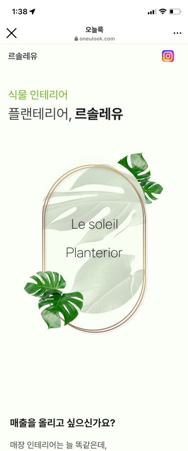
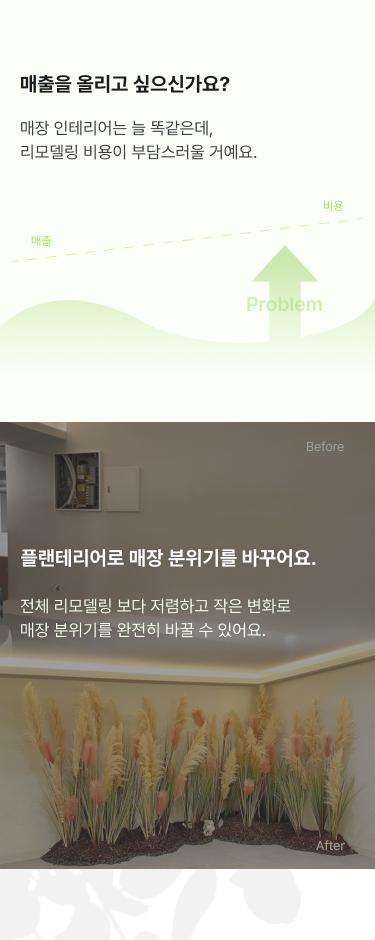
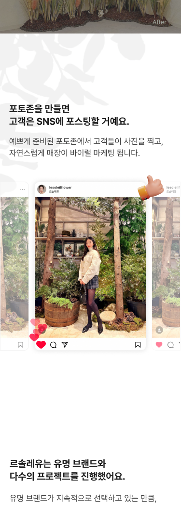
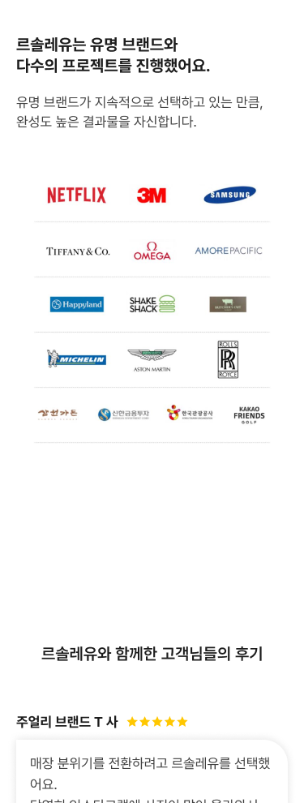
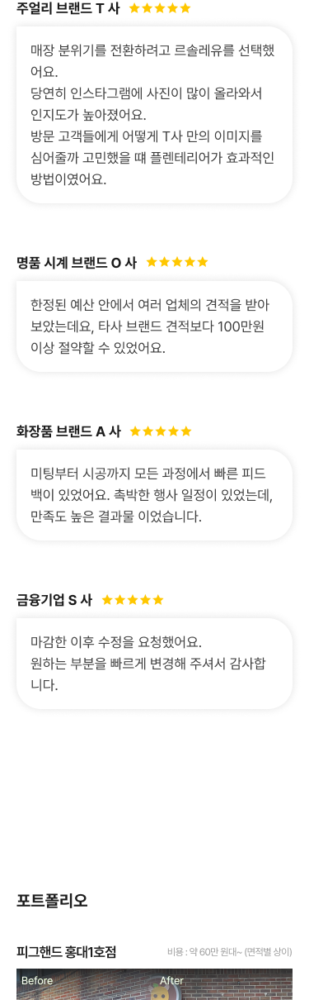
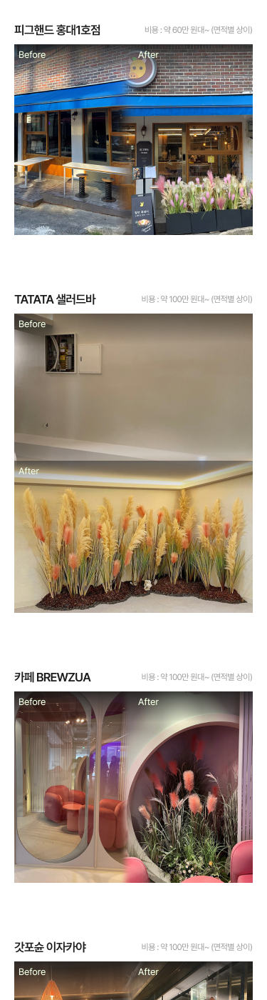
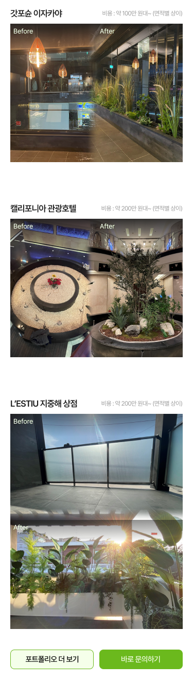

Project / 02
Le Soleil / Planterior
Oneulook mobile landing page design for a plant-interior showcase
오늘룩 식물 인테리어 모바일 랜딩 페이지 디자인
{kind=link}

{kind=link}

{kind=link}

{kind=link}

{kind=link}

{kind=link}

{kind=link}

Overview
개요
A Figma-designed mobile landing page for a Oneulook-linked plant-interior showcase. The page explains Le Soleil’s planterior offering, moves through problem framing, service value, trust logos, reviews, before/after portfolio examples and a closing CTA.
This sits inside the broader Nmodelin / Oneulook work: a production product ecosystem where marketing surfaces, campaign pages and mobile-first conversion flows needed to be consistent with the brand.
오늘룩 맥락에서 제작한 르솔레이유 플랜테리어 모바일 랜딩 페이지 디자인입니다. 문제 제기, 서비스 가치, 고객사 로고, 리뷰, 전후 포트폴리오 사례, 하단 CTA까지 이어지는 긴 모바일 전환 흐름으로 구성했습니다.
앤마들린 / 오늘룩 작업의 일부로, 운영 제품과 연결되는 마케팅 화면·캠페인 페이지·모바일 전환 흐름의 브랜드 일관성을 맞춘 디자인 작업입니다.
What I built
담당 · 구현
- Mobile-first long-form landing layout in Figma.
- Section flow from hero to proof, portfolio and CTA.
- Visual direction based on a green planterior palette, soft cards and photo-led trust.
- Prepared the page as a conversion surface inside the Oneulook / Nmodelin ecosystem.
- Figma 기반 모바일 우선 롱폼 랜딩 레이아웃.
- 히어로 → 문제 제기 → 신뢰 요소 → 포트폴리오 → CTA로 이어지는 섹션 흐름.
- 그린 계열 플랜테리어 팔레트, 부드러운 카드, 사진 중심 신뢰 요소 구성.
- 오늘룩 / 앤마들린 생태계 안의 전환용 마케팅 화면으로 정리.